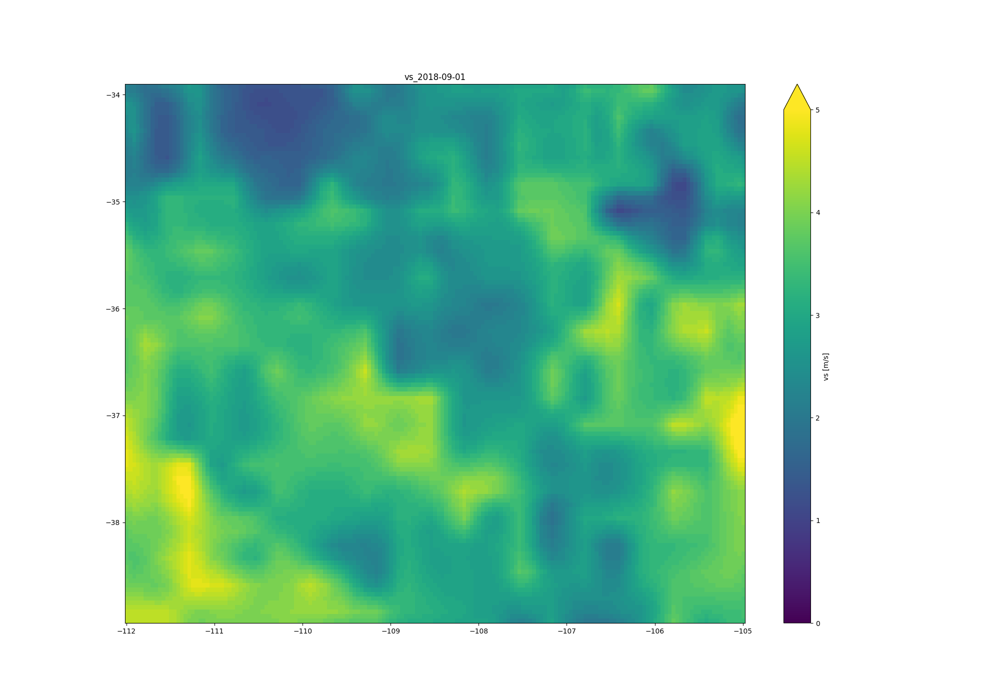
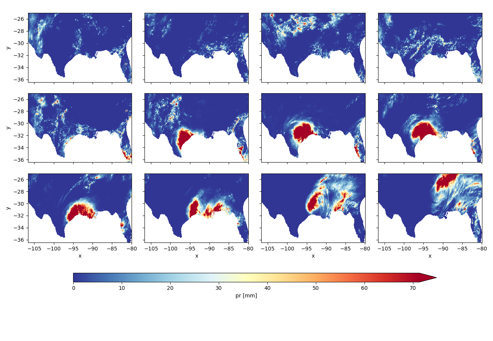
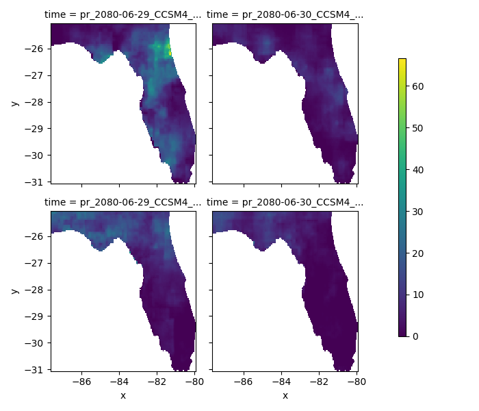
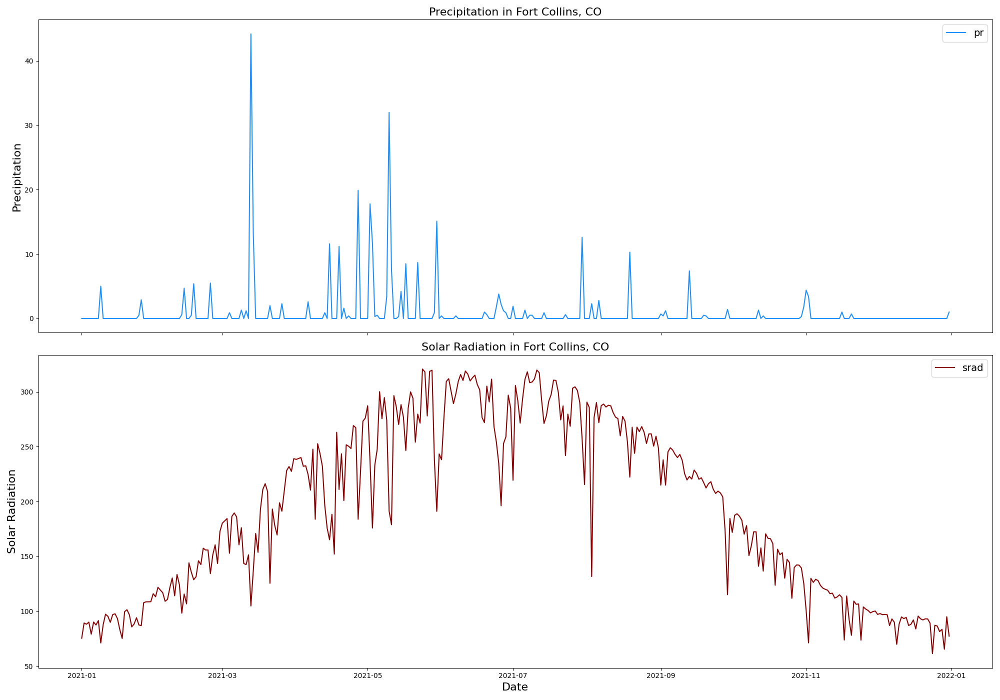

Welcome to climatePy
Angus Watters
LynkerMike Johnson
LynkerSource:
vignettes/03-intro-climatepy.Rmd
03-intro-climatepy.RmdUseful Packages for climate data
# climatePy
import climatePy
# vector data libs
import geopandas as gpd
import shapely
from shapely.geometry import box
# gridded data libs
import xarray as xr
# geoencoding service
import geopy
# misc
import numpy as np
import pandas as pd
import random
import joblib
# plotting libs
import matplotlib.pyplot as plt
import seaborn as snsclimatePy examples
The climatePy package is supplemented by the geopy Python package which
allows for an easy to use interface for many geocoding APIs.
To get a climate product, an area of interest must be defined:
# get AOI polygon from OpenStreetMap API
nom = geopy.geocoders.Nominatim(user_agent="climatePy")
geolocal = nom.geocode("North Carolina", geometry='wkt')
AOI = gpd.GeoDataFrame(
{"geometry" : [shapely.wkt.loads(geolocal.raw['geotext'])]
},
crs = "EPSG:4326"
)
Here we are loading a polygon for the state of North Carolina More examples of constructing AOI calls can be found here
With an AOI, we can construct a call to a dataset for a parameter(s) and date(s) of choice. Here we are querying the PRISM dataset for maximum and minimum temperature on October 29, 2018:
p = climatePy.getPRISM(
AOI = AOI,
varname = ['tmax','tmin'],
startDate = "2018-10-29",
timeRes = "daily",
dopar = False
)
Data from known bounding coordinates
climatePy offers support for shapely and
geopandas objects. Here we are requesting wind velocity
data for the four corners region of the USA by bounding coordinates.
from shapely.geometry import box
# 4 corners region of USA
xmin, xmax, ymin, ymax = -112, -105, 34, 39
# make bounding box
AOI = box(xmin, ymin, xmax, ymax)
# insert bounding box into geodataframe
# AOI = gpd.GeoDataFrame(geometry=[AOI], crs ='EPSG:4326')
g = climatePy.getGridMET(
AOI = AOI,
varname = "vs",
startDate = "2018-09-01",
dopar = False
)
Data through time …
In addition to multiple variables we can request variables through time, here let’s look at the gridMET rainfall for the Gulf Coast during Hurricane Harvey:
texas = nom.geocode("Texas", geometry='wkt')
florida = nom.geocode("Florida", geometry='wkt')
AOI = gpd.GeoDataFrame({
"geometry" : [shapely.wkt.loads(texas.raw['geotext']), shapely.wkt.loads(florida.raw['geotext'])]
},
crs = "EPSG:4326"
)harvey = climatePy.getGridMET(
AOI = AOI,
varname = "pr",
startDate = "2017-08-20",
endDate = "2017-08-31",
dopar = False
)
Climate Projections
Some sources are downscaled Global Climate Models (GCMs). These allow you to query forecasted ensemble members from different models and/or climate scenarios. One example is from the MACA dataset:
AOI = gpd.GeoDataFrame({
"geometry" : [shapely.wkt.loads(florida.raw['geotext'])]},
crs = "EPSG:4326"
)m = climatePy.getMACA(
AOI = AOI,
model = "CCSM4",
varname = "pr",
scenario = ["rcp45", "rcp85"],
startDate = "2080-06-29",
endDate = "2080-06-30",
dopar = False
)
Getting multiple models results is also quite simple:
AOI = gpd.GeoDataFrame({"geometry" :
[shapely.wkt.loads(nom.geocode("Colorado", geometry='wkt').raw['geotext'])]},
crs = "EPSG:4326"
)
models = ["BNU-ESM","CanESM2", "CCSM4"]temp = climatePy.getMACA(
AOI = AOI,
varname = "tasmin",
model = models,
startDate = "2080-11-29",
dopar = False
)
# calculate average Data Array
avg = temp['tasmin'].mean(dim = "time")
avg = avg.expand_dims(time = xr.DataArray(["tasmin_Ensemble_mean"], dims='time')).transpose('x', 'y', 'time')
# Concatonate original data arrays with average data array
temp['tasmin'] = xr.concat([temp['tasmin'], avg], dim="time")
If you don’t know your models, you can always grab a random set by specifying a number:
# AOI (Michigan, USA)
AOI = gpd.GeoDataFrame({
"geometry" : [shapely.wkt.loads(nom.geocode("Michigan, USA", geometry='wkt').raw['geotext'])]
},
crs = "EPSG:4326"
)
# get 3 random MACA models
random_models = climatePy.getMACA(
AOI = AOI,
model = 3,
varname = "tasmin",
startDate = "2050-10-29",
dopar = False
)
Global Datasets
Not all datasets are USA focused either. TerraClimate offers global, monthly data up to the current year for many variables, and CHIRPS provides daily rainfall data:
kenya = gpd.GeoDataFrame({
"geometry" : [shapely.wkt.loads(nom.geocode("Kenya", geometry='wkt').raw['geotext'])]
},
crs = "EPSG:4326"
)# TerraClim PET
tc = climatePy.getTerraClim(
AOI = kenya,
varname = "pet",
startDate = "2018-01-01",
dopar = False
)
# CHIRPS precip
chirps = climatePy.getCHIRPS(
AOI = kenya,
startDate = "2018-01-01",
endDate = "2018-01-01",
dopar = False
)
Point Based Data
Finally, data gathering is not limited to areal extents and can be retrieved as a time series at locations.
# Create a DataFrame with 'lng' and 'lat' columns
df = pd.DataFrame({'lng': [-105.0668], 'lat': [40.55085]})
pt = (gpd.GeoDataFrame(geometry=gpd.points_from_xy(df['lng'], df['lat']), crs='EPSG:4326'))
ts = climatePy.getGridMET(
AOI = pt,
varname = ["pr", 'srad'],
startDate = "2021-01-01",
endDate = "2021-12-31",
dopar = False
)
Point Based Ensemble
# Point Based Ensemble
future = climatePy.getMACA(
AOI = pt,
model = 5,
varname = "tasmax",
startDate = "2050-01-01",
endDate = "2050-01-31",
dopar = False
)
Multi Site extraction
Extracting data for a set of points is an interesting challenge. It turns it is much more efficient to grab the underlying raster stack and then extract time series as opposed to iterating over the locations:
- Starting with a set of 50 random points in Colorado.
# Colorado state polygon
AOI = gpd.GeoDataFrame({
"geometry" : [shapely.wkt.loads(nom.geocode("Colorado", geometry='wkt').raw['geotext'])]
},
crs = "EPSG:4326"
)# create 10 random Lat/lon points within the AOI bounding box
points = [shapely.geometry.Point(random.uniform(AOI.bounds.minx[0], AOI.bounds.maxx[0]),
random.uniform(AOI.bounds.miny[0], AOI.bounds.maxy[0])) for _ in range(50)
]
# make geopandas dataframe from points
points_df = gpd.GeoDataFrame(geometry=points, crs = "EPSG:4326")
# create a unique identifier column
points_df["uid"] = ["uid_" + str(i) for i in range(len(points_df))]-
climatePywill grab the DataArray underlying the bounding area of the points
sites_stack = climatePy.getTerraClim(
AOI = points_df,
varname = "tmax",
startDate = "2018-01-01",
endDate = "2018-12-31"
)
- Use
extract_sitesto extract the times series from these locations. Theidparameter is the unique identifier from the site data with which to names the resulting columns.
Providing our stack of DataArrays to extract_sites with
our points_df will extract the raster values for each point
across time.
# extract wide sites data
sites_wide = climatePy.extract_sites(r = sites_stack["tmax"], pts = points_df, id = "uid")